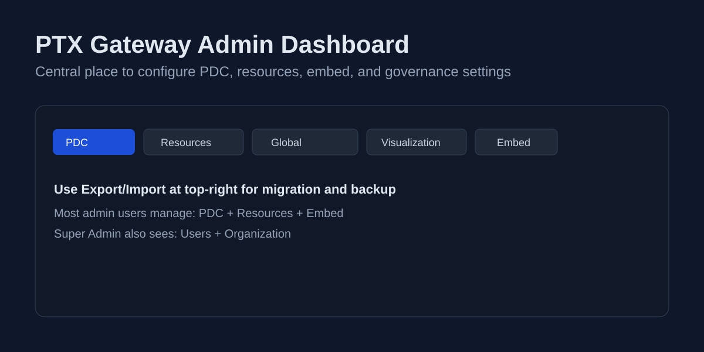
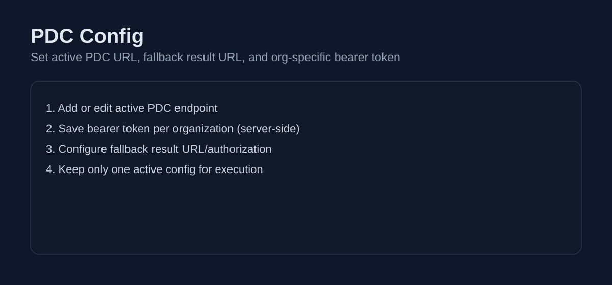
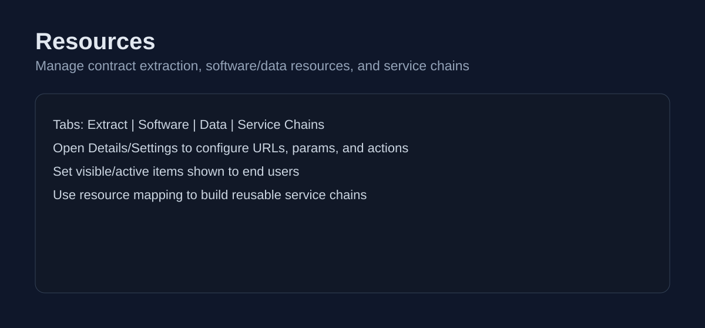
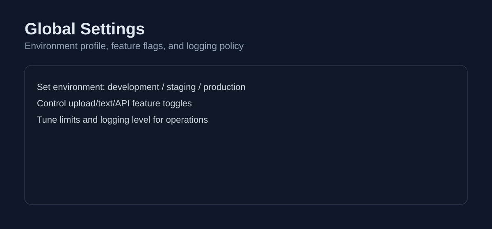
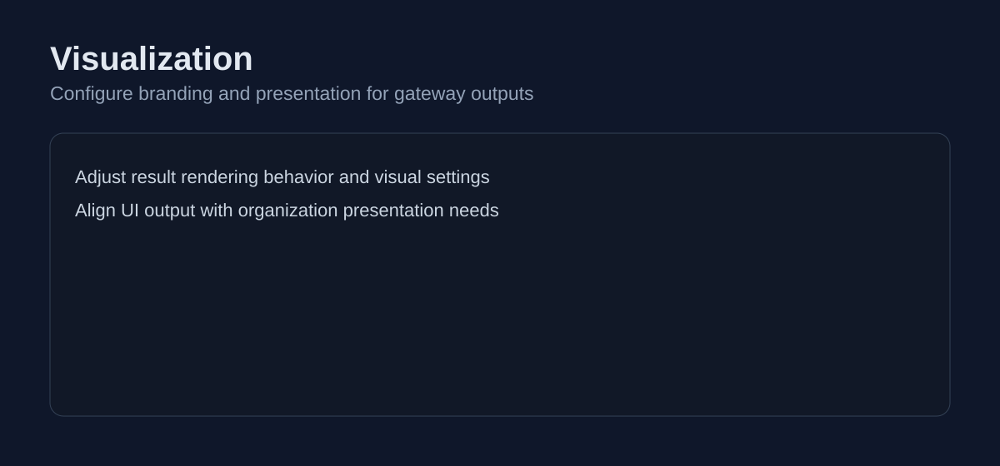
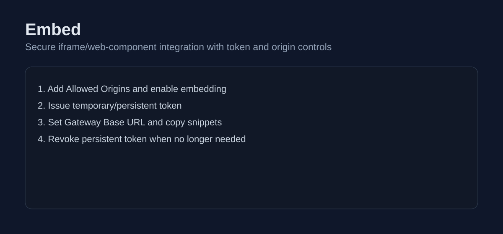
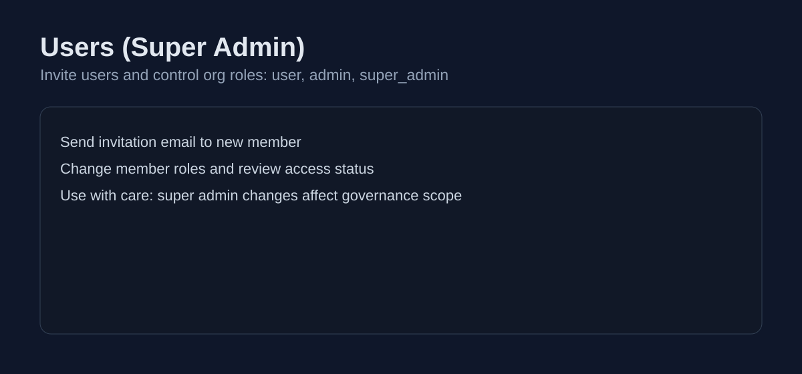
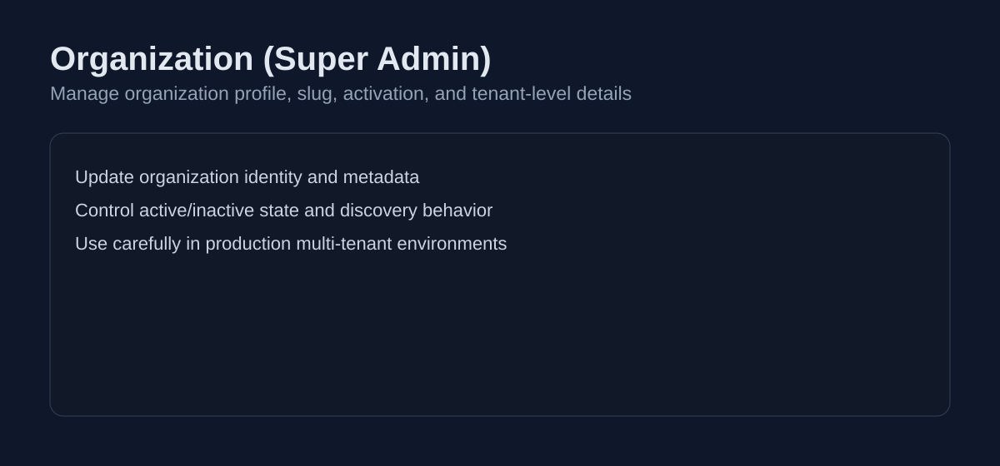

PTX Gateway Admin Pages Guide
Reference guide for administrators to manage PTX Gateway setup, security, and operations.
Admin Dashboard Overview
Central page for organization-level management and settings backup/import.

1) PDC Config
Set active PDC endpoint, fallback result settings, and organization-specific bearer token.

2) Resources
Manage extracted contracts, software/data resources, parameters, and service chains.

3) Global Settings
Configure environment profile, feature switches, limits, and logging policies.

4) Visualization
Control presentation settings for user-facing output and result experience.

5) Embed
Enable embedding, define Allowed Origins, issue/revoke tokens, and copy iframe/web component snippets.

6) Users (Super Admin)
Invite users and manage organization roles: user, admin, super_admin.

7) Organization (Super Admin)
Manage organization metadata, activation status, and tenant-level governance settings.
